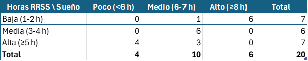

Secuencia competencial
¿Por dónde empezamos?
Para esta primera actividad (correspondiente a la Sesión 1 de activación), el alumnado reflexionará sobre sus hábitos de vida y el consumo digital en su día a día. Se motivará el debate en el aula acerca del impacto que tiene el uso constante de la tecnología y las redes sociales en las rutinas, el descanso y el rendimiento académico.
Se planteará al alumnado la realización de un proyecto de investigación estadística para dar respuesta al reto: "¿Somos dueños de nuestro tiempo libre?". El resultado de este proyecto será la elaboración de un informe estadístico digital que, una vez finalizado, se expondrá de forma oral ante el resto de compañeros y compañeras del aula.
Para realizar este proyecto, la clase se dividirá en grupos cooperativos heterogéneos de cuatro integrantes. Cada equipo, mediante una lluvia de ideas guiada, decidirá qué variables bidimensionales quiere investigar en su entorno más cercano (por ejemplo: horas de uso del móvil frente a horas de sueño; tiempo en redes sociales frente a calificaciones, etc.).
Una vez definidas las variables de estudio, tendrán que tomar decisiones sobre cómo recopilar la información. Para ello, configurarán y diseñarán un formulario digital colaborativo (utilizando herramientas como Google Forms) que servirá para encuestar a todos sus compañeros y generar una base de datos real y anónima.
Se recomienda plantear preguntas claras y de respuesta numérica para garantizar la "facilidad de análisis" posterior a la hora de construir las tablas bidimensionales en la hoja de cálculo.
Recogiendo nuestros datos
En esta fase de nuestra investigación (desarrollada a lo largo de las Sesiones 2 y 3), la «materia prima» o el material con el que vamos a trabajar está compuesto por los datos empíricos recopilados en nuestra encuesta.
Como hemos utilizado un formulario digital, la plataforma ya nos ha generado automáticamente un documento u hoja de cálculo con los resultados en bruto. Ahora nuestro verdadero trabajo consistirá en procesarlos.
Los objetivos de esta actividad son:
- Importar y depurar los resultados brutos obtenidos a través del formulario digital que han cumplimentado nuestros compañeros y compañeras en la sesión anterior.
- Organizar la cantidad de datos recopilados mediante la hoja de cálculo, elaborando las tablas de frecuencias bidimensionales (distribuciones conjuntas, marginales y condicionadas) de las variables de estudio elegidas.
- Tomar una decisión justificada acerca de cómo agrupar los datos (por ejemplo, creando intervalos), de manera que todo el alumnado del equipo trabaje con información estructurada, equilibrada y lista antes de proceder a los gráficos.
Para comenzar a organizar nuestro material, será necesaria la elaboración de una tabla de doble entrada en la hoja de cálculo como la siguiente, donde iremos contabilizando las frecuencias conjuntas de nuestras respuestas:

Analizando nuestras variables
En esta actividad (que abarca las Sesiones 4, 5 y 6 de procesamiento analítico y modelización), el grupo ya habrá organizado los datos recopilados en las tablas de frecuencias bidimensionales de su hoja de cálculo.
El siguiente paso es procesar cuantitativamente esta información para descubrir si existe una relación matemática entre las dos variables que han decidido estudiar (por ejemplo, el uso del móvil frente a las horas de sueño, o el tiempo de ocio frente a las calificaciones).
Generar diagramas de dispersión (nubes de puntos) servirá de gran ayuda, puesto que permiten esquematizar visualmente si los datos tienden a agruparse en una dirección concreta. Además, el docente deberá guiar un debate en gran grupo utilizando ejemplos prácticos para que el alumnado aprenda a diferenciar críticamente entre una simple correlación estadística y una verdadera relación de causalidad.
Para comenzar a modelizar el estudio, es necesario automatizar el cálculo mediante el software informático. El esquema de parámetros que deben extraer con la hoja de cálculo es el siguiente:
- Covarianza: Nos indicará la dirección de la dependencia (directa o inversa).
- Coeficiente de correlación lineal (Pearson): Nos permitirá cuantificar la fuerza exacta de esa relación matemática.
- Recta de regresión: Nos servirá para trazar el modelo matemático que mejor se ajusta a nuestros hábitos.
- Coeficiente de determinación (R²): Valorará la pertinencia y fiabilidad de las predicciones que podamos realizar con la recta.
Nuestro informe estadístico
Con toda la información cuantitativa que se ha obtenido y los modelos estadísticos creados, en esta fase de producción (Sesión 7) se desarrollará un taller en el aula donde los equipos elaborarán su producto final: un informe estadístico digital y una presentación visual. En este documento se dará respuesta al reto inicial planteado ("¿Somos dueños de nuestro tiempo libre?"), reflexionando de forma crítica sobre si los hábitos de vida y consumo digital del grupo-clase son saludables.
En la misma presentación, el docente debe asegurarse de que los grupos recojan de forma estructurada todo el proceso matemático: el planteamiento de las hipótesis iniciales, las tablas de frecuencias bidimensionales, las nubes de puntos con sus correspondientes rectas de regresión y las conclusiones analíticas sobre la fiabilidad de las predicciones obtenidas.
En la última sesión (Sesión 8), cada equipo expondrá su proyecto de investigación oralmente en el aula, ante el resto de los grupos, utilizando su informe digital como soporte visual y con una duración máxima de 10 minutos por presentación.
Para concluir la situación de aprendizaje, el docente guiará la implementación de los instrumentos de evaluación formativa. El alumnado cumplimentará una diana individual de autoevaluación (para reflexionar sobre su propio aprendizaje y la gestión de la frustración) y una rúbrica de coevaluación para valorar el desempeño, la distribución de tareas y el respeto en el trabajo en equipo.